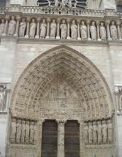

Notre-Dame der Architekten
Notre-Dame der Architekten

|
Im Herzen der Ile de la Cité, dem historischen Zentrum von Paris, entstand vor etwas mehr als 600 Jahren eine der schönsten Kathedralen Frankreichs. Auf die Initiative von Erzbischof Maurice de Sully, König Ludwig VII. und Papst Alexander III. hin wurde sie in weniger als zwei Jahrhunderten erbaut: Der erste Stein wurde 1163 gelegt, im Jahre 1351 wurde der Bau fertig gestellt. Notre-Dame, so wie wir sie heute kennen, ist jedoch nicht mehr das Bauwerk, das die Menschen im Mittelalter bewunderten. Ab dem 18. Jahrhundert erlebte die Kathedrale vielfältige Verstümmelungen und Umbauten - bis zur Restauration durch Viollet-Le-Duc, der dem am Anfang des 19. Jahrhunderts nahezu zur Ruine zerfallenen Bauwerk seine mittelalterliche Gestalt zurückgeben wollte. Trotz seiner etwas freizügigen historischen Auslegung - wir dürfen nicht vergessen, dass diese Epoche von einem Renouveau der Hochgotik im Zuge der Romantik geprägt war - ist es diesem Architekten zu verdanken, dass uns die Kathedrale, ausgestattet mit ihren Wasserspeiern, bis heute erhalten geblieben ist. |
 |
Ich möchte hier in erster Linie den symbolischen Code der sakralen Baumeister herausstellen. Es wäre nämlich falsch zu glauben, dass Standort, Ausrichtung und selbst dekorative Ausstattung allein vom Geschmack des einen oder anderen Architekten bestimmt wurden. Der Grundriss wurde ganz im Gegenteil minutiös ausgearbeitet.
Neben der Zahlensymbolik, die in der sakralen Architektur omnipräsent ist (jedoch eine fundierte mathematische Kenntnis erfordert, die mir leider nicht gegeben ist :o), basiert der Bau von Kathedralen auf einer richtiggehenden Wissenschaft der Mystik. Das Studium und die Erschließung des Raums verdeutlichen dies. Die Standortwahl war keineswegs das Ergebnis reinen Zufalls. Die mittelalterlichen Bauherren widmeten sich mit großem Ernst dem Studium der so genannten "tellurischen Linien". In Anlehnung daran lässt sich eine vertikale Symbolik in Übereinstimmung mit den 3 Welten des Universums herauskristallisieren.
Das bedeutet Folgendes: Die vertikale Ausdehnung der Kathedrale spiegelt die Überlagerung der drei Ebenen des Universums wider. Die Krypta symbolisiert die Unterwelt, Mauern und Boden symbolisieren die Welt der Menschen und Türme und Turmspitzen die Welt Gottes. Auf diese Weise wird die universelle Harmonie bewahrt.
Für die horizontale Ausrichtung griffen die Architekten auf eine Sonnensymbolik zurück. Der Chor ist nach Osten hin ausgerichtet, sodass er bei Sonnenaufgang von Westen abgewandt ist, dem Symbol für das Ende der Zeit. Die im Sonnenschatten liegende Nordseite steht somit für die Sünde und das Böse, während die hell erleuchtete Südseite dem Ruhme Christi gewidmet ist.
Für Nicht-Eingeweihte birgt Notre-Dame noch immer unzählige Geheimnisse. Auf meiner eigenen Suche nach der Weisheit bin ich dem initiatischen Weg der Alchimisten des Mittelalters gefolgt :o)
Bevor wir uns jedoch in dieses spirituelle Abenteuer stürzen, sollten wir zunächst das alchimistische Konzept näher umgrenzen. Wir alle kennen das grundlegende Prinzip, das darin bestand, gewöhnliche Metalle in Gold umzuwandeln, dem Symbol für Perfektion. Parallel dazu strebten die Alchimisten nach der universellen Vollkommenheit im Menschen, mit der Unsterblichkeit erreicht werden konnte.
Die Alchimisten, die regelmäßig der Hexenkunst bezichtigt wurden, legten sich eine geheime, verschlüsselte Sprache zu. Sie interpretierten die in den Kathedralen im Übermaß vorhandene christliche Ikonographie als philosophische Allegorien. Notre-Dame ist besonders reich an alchimistischen Symbolen. Die Kathedrale führt uns auf den Weg zur Erleuchtung, der mit einer tiefgreifenden Kenntnis des eigenen Ich beginnt, mit der Bestimmung der umzuwandelnden Prima Materia. Es genügt bereits, die westliche Fassade zu studieren, um einen Einblick in diese okkulte Dimension zu erhalten.
Die Westfassade der Kathedrale und die drei Innenrosen sind als eine
Einheit zu betrachten, da das Ganze den
initiatischen Werdegang der
Alchimisten beschreibt: Ein äußerer Weg auf kosmischer und ein innerer Weg auf
menschlicher Ebene.
Die
Fensterrosen sind das Symbol für den Weg vom ursprünglichen Chaos zur Vollendung
des Werks. Durch ihre konzentrische Form
beinhalten sie den
Grundgedanken des ewigen Neubeginns.
|
 Hauptportal der Westfassade, dessen Medaillons der Suche der Alchimisten Ausdruck verleihen. |
Für ein besseres Verständnis gehen wir vom Mittelpfeiler und von der Statue der phrygischen Göttin Kybele aus, der Magna Mater. Die Figur trägt zwei Bücher, die das Alte und Neue Testament darstellen könnten. Auf einer tieferen Ebene verweist das erste, geöffnete Buch auf das Wissen, das durch die Schrift vermittelt wird, während das zweite, geschlossene Buch die innere Erkenntnis symbolisiert. Diese alchimistische Verbindung aus spirituellem Ansatz und Kenntnis der Schriften führt den Novizen zur Weisheit. Außen beginnt der Weg am Portal der Heiligen Anne, der Mutter der Jungfrau, auf dem die Geburt Christi zu sehen ist. Die dem Portal entsprechende südliche Fensterrose zeigt denn auch Christus als Architekten der Welt. Wir befinden uns am Anfang des Weges, am Ursprung der Welt. Dieser Beginn kann mit der Putrefaktion der Alchimisten gleichgesetzt werden, der Bildung des unreinen Ursprungs des Werks. Nun heißt es, die chaotische, ungeformte Prima Materia zu reinigen, was in spirituellem Sinn die Reinigung der Seele bedeutet. |
Der Weg führt dann zum Portal der Heiligen Jungfrau, das den zeitlichen Wandel der Jahreszeiten und der Arbeit symbolisiert. Die westliche Rose verweist sowohl auf den nächtlichen Himmel als auch auf die Synthese des Werks. Der Materie (hier der Mensch) muss eine spirituelle Dimension verliehen, dem zuvor gereinigten Körper muss seine Seele zurückgegeben werden.
Schließlich erreicht der Weg das Hauptportal. Hier wird das Jüngste Gericht dargestellt, das vollendete Werk oder, mit anderen Worten, das "Opus Magnum", das Große Werk. Die Medaillons auf dem Portal zeigen uns, welche Schritte zu durchlaufen sind.
 |
Im alchimistischen Sinn bildet das Hauptportal das Gleichgewicht zwischen Tugend und Laster, eine aus der eigenen zwiespältigen Natur entstandene Gegenüberstellung.
Die Ikonographie des Portals greift denn auch wirklich die von den Alchimisten der damaligen Zeit verwendeten Symbole auf. Jedes Medaillon verfügt über ein Pendant, das ihm im Vergleich zur Mittelachse symmetrisch gegenüber gestellt ist.
|
Medaillon mit einer Darstellung der Weisheit oder Bedacht. In der Alchimie entspricht dies dem philosophischen Merkur. |
Abraham vor dem Altar symbolisiert die Umwandlung. |
Die Medaillons bilden eine Aufforderung zur Transmutation des eigenen Ich: Die eigenen Laster sind als formbare Prima Materia zu betrachten, die es gilt, zu Tugenden umzuformen.
So bilden Stolz und Wankelmütigkeit das Gegenstück zu Demut und Standhaftigkeit. Mithilfe dieser zwei Tugenden muss es gelingen, die damit assoziierten Laster zu bekämpfen. Dasselbe gilt für alle der in der nachstehenden Tabelle aufgeführten Tugenden und Laster:
|
|
Das alchimistische Universum von Notre-Dame illustriert sehr schön die Vorstellung vom Menschen als Materie und als Teilhaber am Großen Werk, dessen materielle und spirituelle Dimension.
Um die Symbolik von Notre-Dame auf eine etwas weniger tiefsinnige Art abzuschließen, hänge ich eine Filmographie an, in der der Kathedrale viel häufiger ein aktiver Part zufällt als der eines reinen Dekors.
Als Schauplatz des berühmten Romans von Victor Hugo tritt Notre-Dame in erster Linie in unzähligen Adaptationen dieses Werkes für die Kinoleinwand auf:
|
Kinoplakat des Films von Dieterle mit Charles Laughton |
- 1906: La Esmeralda von Alice Guy und Victorin Jasset, mit Denise Becker - 1911: Notre-Dame de Paris von Albert Capellani, mit Stacia de Napierkowska - 1913: Notre-Dame de Paris von Ernesto Maria Pasquali - 1916: The Darling of Paris von J.Gordon Edwards, mit Theda Bara - 1923: Notre-Dame de Paris von Wallace Worsley, mit Lon Chaley - 1939: Quasimodo von William Dierterle, mit Charles Laughton und Maureen O'Hara - 1956: Notre-Dame de Paris von Jean Delannoy, mit Anthony Quinn und Gina Lollobridgida - Die Fernsehfilme von Michael Tuchner 1982 und von Peter Medak 1997 - 1996: Der Glöckner von Notre Dame der Disney-Filmstudios |
Seite noch im Aufbau!
[Annäherung über die Architektur] ....................[Annäherung über die Alchimie].............. [Annäherung über die Welt des Kinos]